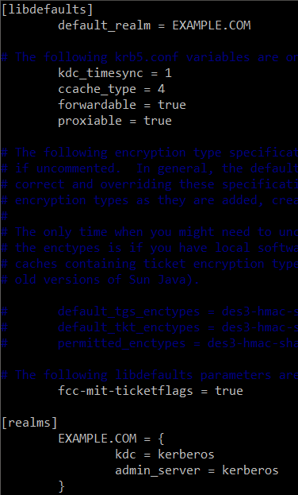
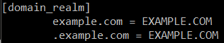
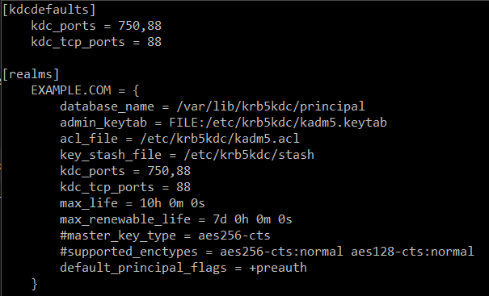

Setting Up the Kerberos Server
The Kerberos server is configured using MIT Kerberos. Below is an example of the configuration file:
After installing the Kerberos packages, we can edit the configuration file :
-
For the
/etc/krb5.conffile to configure the domain name:  -
And for the
/etc/krb5kdc/kdc.conffile with all the parameters for the tickets:
Then we can create principal for the client so they can get tickets. In this project, we create an user
user1 that will be used by the windows client.